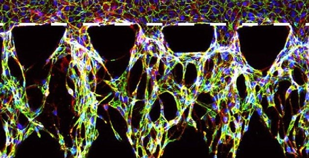
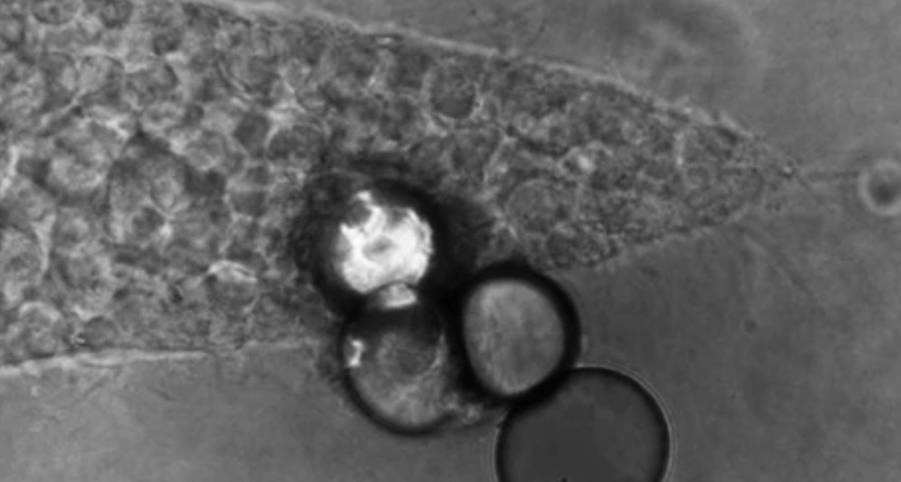
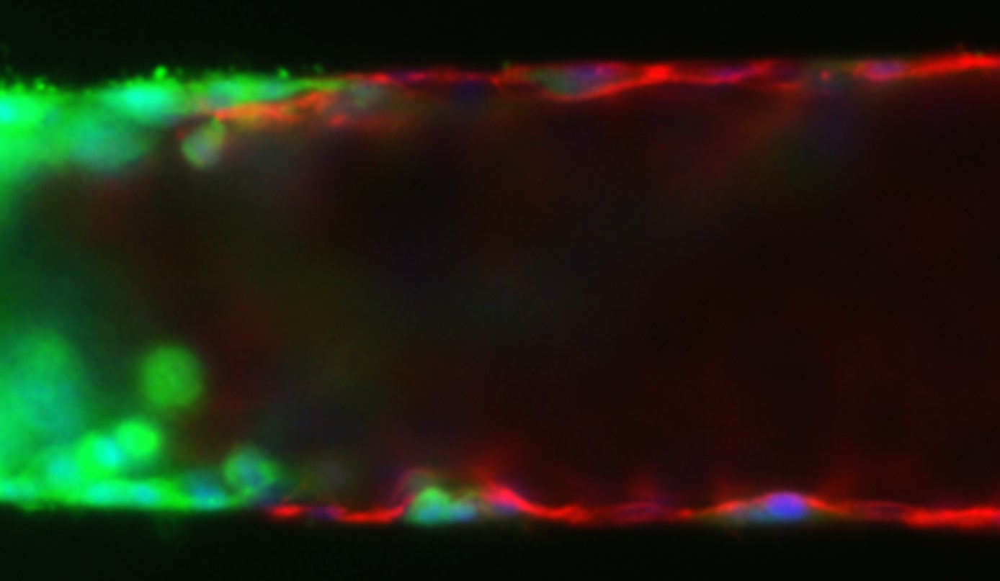
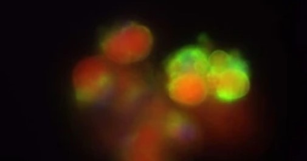
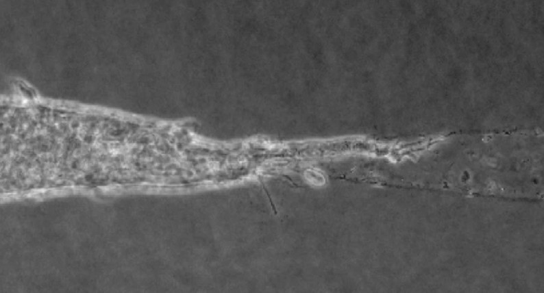
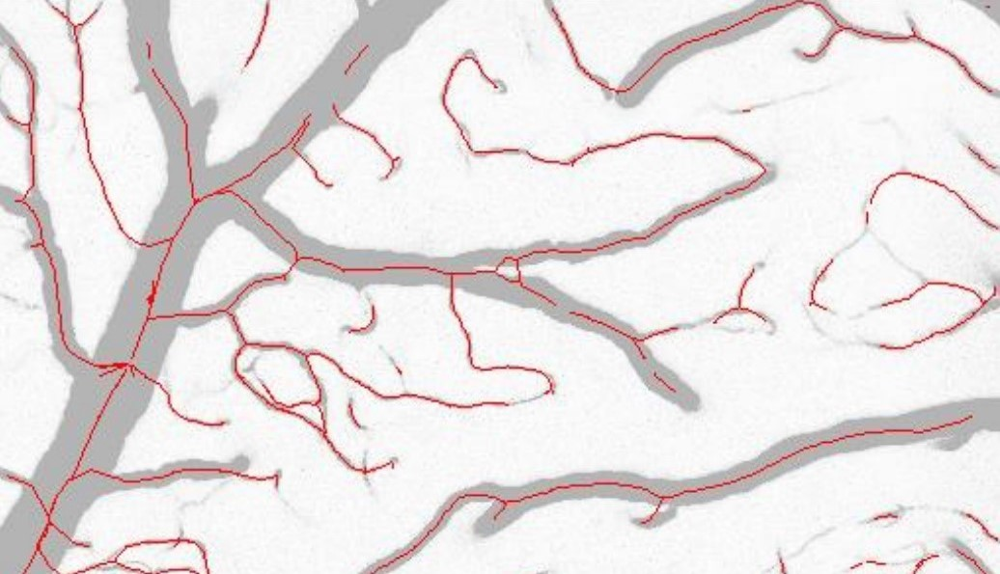
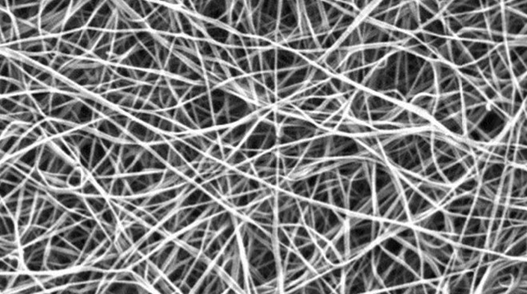
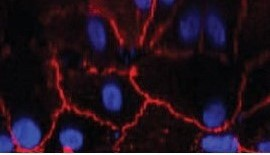

Authors: Seibel, A. J., Frosti, C. L., Tlemçani, A. R., Lahiri, N., Brammer-Depuy, J. A., Layne, M. D., & Tien J.
Journal: In preparation
Year:

Authors: Chang, C.-W., Shih, H.-C., Cortes-Medina, M. G., Beshay, P., Avendano, A., Seibel, A. J., Liao, W.-H., Tung, Y.-C., & Song, J. W.
Journal: ACS Appl. Mater. Interfaces 15, 15047-15058
Year: 2023

Authors: Dance, Y. W., Obenreder, M. C., Seibel, A. J., Meshulam, T., Ogony, J. W., Lahiri, N., Radisky, D. C., Layne, M. D., Farmer, S. R., Nelson, C. M., & Tien, J.
Journal: Cell. Mol. Bioeng. 16, 23-39
Year: 2022

Authors: Seibel, A. J., Kelly, O. M., Dance, Y. W., Nelson, C. M., & Tien, J.
Journal: Cell. Mol. Bioeng. 15, 553-569
Year: 2022

Authors: Dance, Y. W., Meshulam, T., Seibel, A. J., Obenreder, M. C., Layne, M. D., Nelson, C. M., & Tien, J.
Journal: Cell. Mol. Bioeng. 15, 15-29
Year: 2022

Authors: Tien, J., Dance, Y. W., Ghani, U., Seibel, A. J., & Nelson, C. M.
Journal: Cell. Mol. Bioeng. 14, 147-159
Year: 2021

Authors: Tahir, W., Kura, S., Zhu, J., Cheng, X., Damseh, R., Tadesse, F., Seibel, A. J., Lee, B. S., Lesage, F., Sakadžic, S., Boas, D. A., & Tian, L.
Journal: BME Front. 2020, 8620932
Year: 2020

Authors: Tien, J., Ghani, U., Dance, Y. W., Seibel, A. J., Karakan, M. C., Ekinci, K. L., & Nelson, C. M.
Journal: iScience 23, 101673
Year: 2020

Authors: Chang, C.-W., Seibel, A. J., Avendano, A., Cortes‐Medina, M. G. & Song, J. W.
Journal: Adv. Healthc. Mater. 9, 1901399
Year: 2020

Authors: Chang, C.-W., Seibel, A. J., & Song, J. W.
Journal: Microcirculation 4, e12547
Year: 2019